Blogs y webs de Tecnología para Secundaria¶
Ranking de blogs y páginas web de Tecnología para Educación Secundaria.
Los ranking de Similarweb se han tomado en octubre de 2022, por lo que corresponden a los datos de septiembre de 2022.
Para realizar la ordenación de las páginas web se ha tomado como base el cálculo de la multiplicación del número de visitas mensuales por la duración media de las visitas por el número de páginas por visita. Los números más altos se colocan primeros en la lista.
Cuando estos datos no están disponibles, se ha ordenado por el ranking suministrado por Similarweb.
-

Similarweb rank 81.4 k Visitas 973.3 k Páginas/visita 1.5 Duración de visita 109 s -

Similarweb rank 1570.7 k Visitas 22.5 k Páginas/visita 2.22 Duración de visita 191 s Web creada por Pedro Landín, del departamento de Tecnología del Sagrado Corazón de Placeres.
-

Similarweb rank 528.1 k Visitas 98.8 k Páginas/visita 1.63 Duración de visita 47 s Web creada por Carlos Pardo, profesor de Tecnología.
-

Similarweb rank 3737.4 k Visitas 5.6 k Páginas/visita 3.75 Duración de visita 342 s -
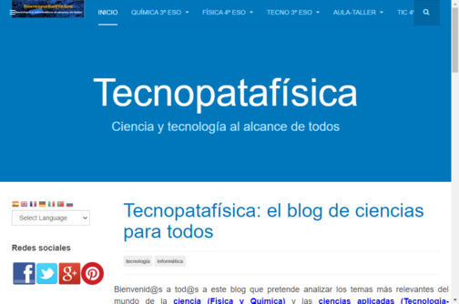
Similarweb rank 3682.7 k Visitas 8.3 k Páginas/visita 1.81 Duración de visita 423 s -

Similarweb rank 807.2 k Visitas 62.2 k Páginas/visita 1.41 Duración de visita 44 s Blog del profesor de Tecnología

Similarweb rank 1040.4 k Visitas 33.1 k Páginas/visita 2.78 Duración de visita 32 s -

Similarweb rank 2204.7 k Visitas 19.7 k Páginas/visita 1.25 Duración de visita 89 s Web del IES Villalba Hervás, IES Antonio Glez. Glez. y el IES Tegueste. Creado por nueve docentes de Tecnología en el que desde marzo de 2008 publican apuntes, actividades, proyectos, etc.
-

Similarweb rank 523.2 k Visitas 84.1 k Páginas/visita 2.39 Duración de visita 106 s Web del movimiento Marea Verde, con apuntes y libros de muchas materias, incluida la materia de Tecnología.
El ranking de esta web tiene una penalización debido a que tiene mucho tráfico dedicado a otras materias que no son de tecnología.
-

Similarweb rank 922.7 k Visitas 32.3 k Páginas/visita 3.83 Duración de visita 16 s -

Similarweb rank 1151.0 k Visitas 39.3 k Páginas/visita 1.57 Duración de visita 30 s Blog creado en el departamento de Tecnología del IES Luis Vélez de Guevara, Écija.
-

Similarweb rank 2505.2 k Visitas 11.6 k Páginas/visita 2.59 Duración de visita 55 s -
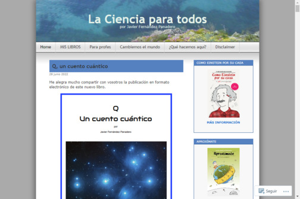
Similarweb rank 1119.6 k Visitas 49.9 k Páginas/visita 1.3 Duración de visita 13 s Blog de Javier Fernández Panadero.
-
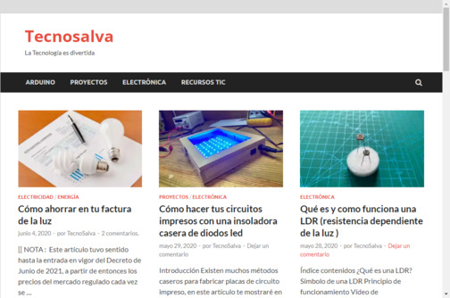
Similarweb rank 3763.1 k Visitas 9.8 k Páginas/visita 1.05 Duración de visita 43 s -

Similarweb rank 4602.8 k Visitas 6.0 k Páginas/visita 1.53 Duración de visita 33 s Blog creado por Amelia Tierno (docente de Tecnología en IES Ignacio Ellacuría en Alcalá de Henares).
-

Similarweb rank 3634.5 k Visitas 10.3 k Páginas/visita 1.12 Duración de visita 3 s José Manuel Panadero es el autor de esta página web, que se caracteriza por sus numerosas propuestas para la asignatura de Tecnología.
-

Similarweb rank 3697.1 k Visitas 10.2 k Páginas/visita 1.13 Duración de visita s Todotecnología IES el Chaparil
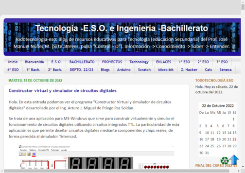Similarweb rank 4881.9 k Blog de tecnología del IES el Chaparil de Nerja.
-

Similarweb rank 5588.3 k -

Similarweb rank 6409.2 k -

Similarweb rank 7094.6 k -

Similarweb rank 7107.0 k -
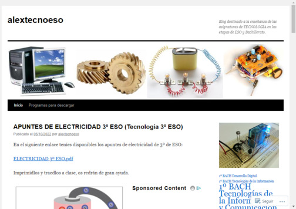
Similarweb rank 7348.7 k -

Similarweb rank 7477.7 k -
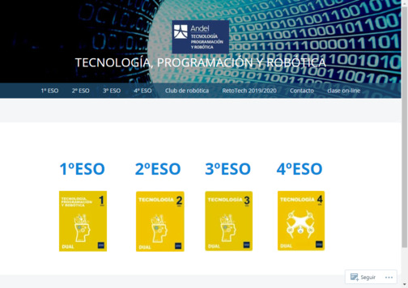
Similarweb rank 7510.4 k -

Similarweb rank 8168.4 k -

Similarweb rank 8312.1 k -

Similarweb rank 9334.1 k -

Similarweb rank 9632.8 k -
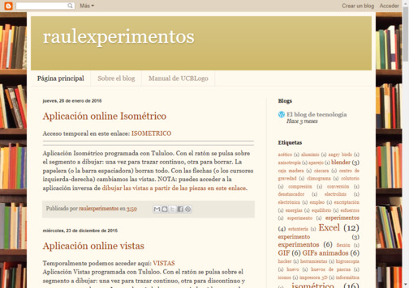
Similarweb rank 11879.0 k Experimentos sencillos de ciencia y tecnología.
Blog de Tecnología de Carlos Martínez

Similarweb rank 12524.3 k -

Similarweb rank 13362.6 k -

Similarweb rank 14758.6 k -
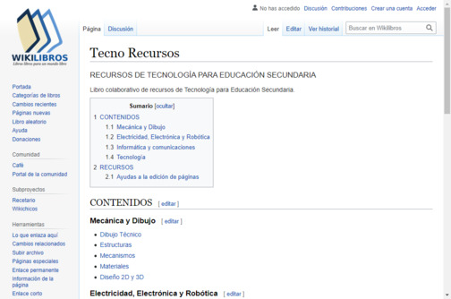
Similarweb rank Sin datos Wikilibro colaborativo orientado a crear recursos para Tecnología.
-

Similarweb rank Sin datos -
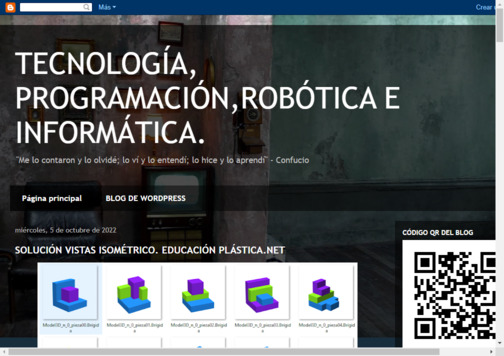
Similarweb rank Sin datos -

Similarweb rank Sin datos -

Similarweb rank Sin datos -

Similarweb rank Sin datos -

Similarweb rank Sin datos -
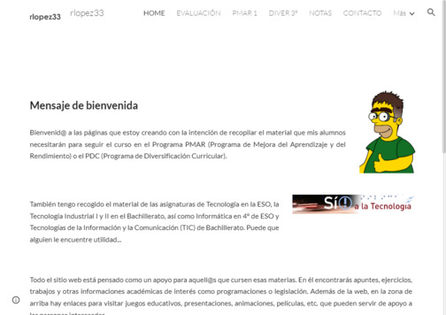
Similarweb rank Sin datos Manual básico de consulta de Tecnología (Intef)

Similarweb rank Sin datos -
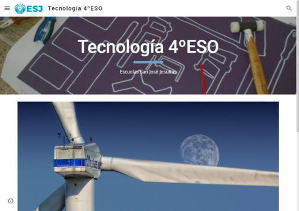
Similarweb rank Sin datos -

Similarweb rank Sin datos -

Similarweb rank Sin datos -

Similarweb rank Sin datos -

Similarweb rank Sin datos -
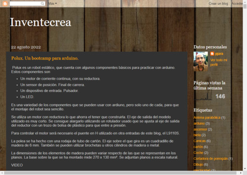
Similarweb rank Sin datos -

Similarweb rank Sin datos -

Similarweb rank Sin datos -

Similarweb rank Sin datos -

Similarweb rank Sin datos -

Similarweb rank Sin datos -

Similarweb rank Sin datos Blog de Programación y Robótica

Similarweb rank Sin datos -

Similarweb rank Sin datos -
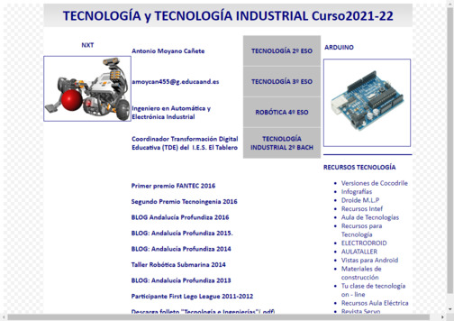
Similarweb rank Sin datos -

Similarweb rank Sin datos -

Similarweb rank Sin datos -

Similarweb rank Sin datos -

Similarweb rank Sin datos Web creada por G. Ibán de la Horra, disponible en inglés y castellano.
-

Similarweb rank Sin datos La Tecnología en el Villadiego

Similarweb rank Sin datos Blog creado por el departamento de Tecnología del IES Virgen de Villadiego de Peñaflor en Sevilla.